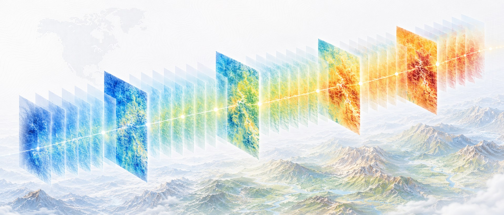

v0.1.6 · Py 3.11+ · ICTA Ltda.
Genera más datos
entre tus datos existentes.
tempify realiza densificación temporal sobre stacks ráster geoespaciales: convierte una serie mensual de 12 valores en una serie diaria de 365, preservando la media mensual con tolerancia < 10⁻⁴ °C.